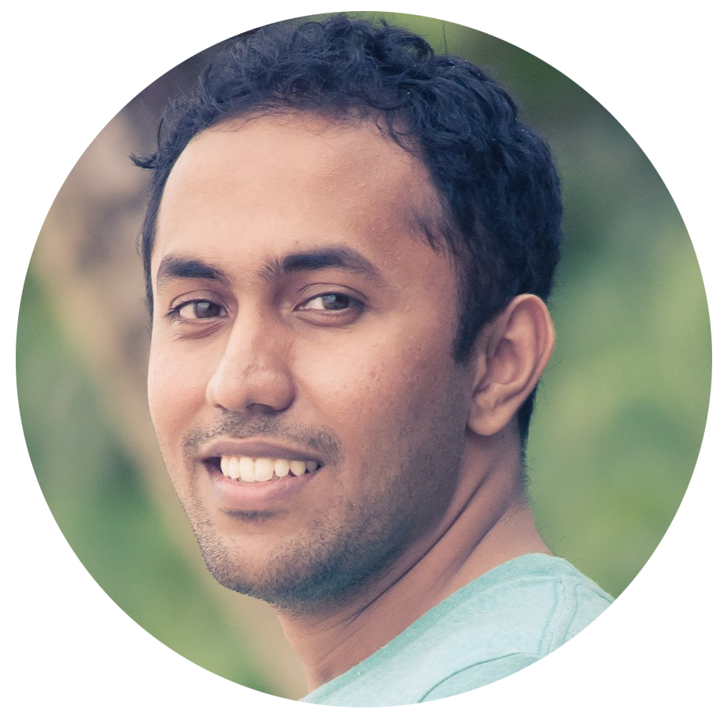

Home
Work
Blog
Hello.
I'm Tejaswi Yerukalapudi: A
programmer
,
photographer
and
blogger
. I currently work at
Patient Point
as a software developer. I went to college at
DAIICT
and got my Masters in Computer Science from
Stevens Institute of Technology
.